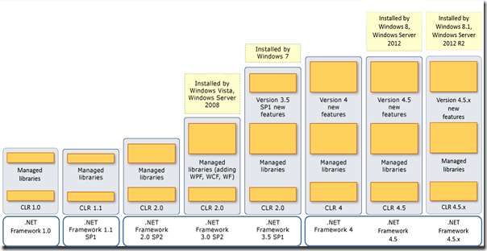
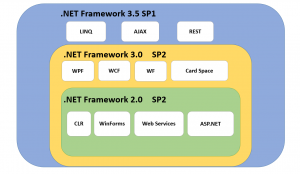

(※ 2015 年 4 月 6 日に Microsoft Japan Visual Studio Support Team Blogに公開した情報のアーカイブです。)
こんにちは、Visual Studio サポート チームです。
今回は、.NET Framework のランタイムがテーマです。 2015 年 4 月現在、主な .NET Framework のバージョンとしては、9 つ (1.0、1.1、2.0、3.0、3.5、4、4.5、4.5.1、4.5.2) がリリースされています。 これらの .NET Framework のバージョン間の関係性について説明します。
.NET Framework の各バージョンと機能について
下図のとおり、.NET Framework の各バージョンには、コア コンポーネントとして共通言語ランタイム (CLR: Common Language Runtime) が含まれ、基本クラス ライブラリやその他のマネージ ライブラリなどの追加コンポーネントも含まれています。

これまで、新しいバージョンの .NET Framework には、1 つ前のバージョンの機能が含まれると共に、新機能が追加されています。 CLR は .NET Framework のコア コンポーネントですが、.NET Framework のバージョン番号とは別の、固有のバージョン番号で識別されます。 .NET Framework のバージョンと、.NET Framework に含まれる CLR のバージョンは上図のとおりです。 .NET Framework 4 には CLR Version 4 が含まれますが、.NET Framework 3.5 には CLR 2.0 が含まれます。(CLR の Version 3 はありません)。
依存関係
原則として、アプリケーションが必要とするバージョンの .NET Framework をそれぞれインストールする必要がありますが、1 つのシステムに複数のバージョンをインストールして同時に利用できます。 上図にて、4 つに分類されている各グループ (1.0、1.1、2.0/3.0/3.5、4/4.5/4.5.x) は、お互いに独立していて、1 つのシステム内に共存できます。
このため、NET Framework をインストールする前に、旧バージョンをインストールしておく必要はありませんし、上位バージョンをインストールしても下位バージョンをインストールしたことにはなりません。 もし、複数のバージョンを同時にインストールする必要がある場合は、バージョンの小さい方から順にインストールすることを推奨します。
1.0、1.1 について
まず、2002年に登場した .NET Framework 1.0、2003年に登場した .NET Framework 1.1、そして2005年に登場した .NET Framework 2.0 までは、それぞれ完全に独立したフレームワークになっており、CLR 部分も全く独立してインストールされていました。 これらの３つをもしも同じマシンにインストールすれば、それらは別のフォルダにインストールされることになり、それぞれの持つライブラリを、個別に使用することが可能でした。 現在はこれらのバージョンはサポート期限を過ぎているので、詳細は割愛します。
2.0、3.0、3.5 の内包関係について
.NET Framework 2.0 以降のフレームワークでは、これまでのバージョン アップで熟成されてきた .NET Framework 2.0 を「核」としてそのまま使うことにし、新機能を持つクラスライブラリを追加する形態になりました。 こうすることで、無駄な重複部分がインストールされることを防ぎ、かつ安定した .NET Framework 2.0 の CLR を常に使うことができるようになりました。
.NET Framework 2.0 に拡張ライブラリをのせてリリースされた最初の .NET Framework が、.NET Framework 3.0 です。 そして、統合言語クエリ (LINQ) や ASP.NET AJAX などの新機能を、.NET Framework 3.0 に追加するような形で登場するのが .NET Framework 3.5 になります。
ただし、3.5 で追加された拡張部分は CLR などの従来のフレームワークとの依存性が強く、従来の 2.0 および 3.0 の部分に対して若干のアップデートが必要でした。 その 2.0 および 3.0 に対するアップデートを施すために、.NET Framework 2.0 SP1 および .NET Framework 3.0 SP1 が用意されることになりました。 .NET Framework 3.0 SP1 に、新機能を実行するためのライブラリを合わせたものが、.NET Framework 3.5 ということになります。 内包関係については、下図のとおりです。

実際には .NET Framework 3.5 のインストーラを使用してインストールすれば、必要なものがすべてインストールされます。 たとえばインストール対象のマシンに .NET Framework 2.0 や 3.0 が全く入っていなければ、まずそれらをインストールしてくれますし、.NET Framework 2.0 SP1 や 3.0 SP1 が当たっていない環境であれば、SP1 にアップグレードします。
そのため、これらのバージョンに対応する .NET アプリケーションを利用するには、以下のように .NET Framework のいずれかのバージョンがインストール済みであればよいです。
2.0 対応の .NET アプリケーション： .NET Framework 2.0/3.0/3.5のいずれか 3.0 対応の .NET アプリケーション： .NET Framework 3.0/3.5のいずれか 3.5 対応の .NET アプリケーション： .NET Framework 3.5
4 および4.5.x のインプレース更新について
.NET Framework 4.5 は、システム内にインストールされている .NET Framework 4 を置き換えるインプレース更新です。 同様に、.NET Framework 4.5.x は .NET Framework 4.5 を置き換えるインプレース更新です。 4.5.x は、4 の上位互換のため、.NET Framework 4 アプリケーションは、アプリケーション コードの変更なしに再コンパイルせずに 4.5.x 上でも実行できます。
ただし、逆はできません。 たとえば、.NET Framework 4.5 の上で .NET Framework 4.5.1 または 4.5.2 を対象とするアプリケーションを実行することはお勧めしません。
また、稀に アプリケーション コードの変更が必要な場合があります。 既存のアプリケーションを .NET Framework 4.5 またはそれ以降のバージョンで実行する前に、「App Compatibility in the .NET Framework 4.5 (.NET Framework 4.5 のアプリケーションの互換性)」を参照してください。 現在のバージョンのインストールに関する詳細については、「.NET Framework 4.5、4.5.1、および 4.5.2 のインストール」を参照してください。
Windows OS と .NET Framework のバージョンについて
上記のとおり、1 つのシステム内に複数バージョンの .NET Framework が共存できますが、OS によっては、共存できない組み合わせ、インストールできないバージョンもあります。
各 OS にインストールできる .NET Framework のバージョンについては、「.NET Framework のバージョンおよび依存関係」を参照してください。
本ブログの内容は弊社の公式見解として保証されるものではなく、開発・運用時の参考情報としてご活用いただくことを目的としています。もし公式な見解が必要な場合は、弊社ドキュメント (https://learn.microsoft.com や https://support.microsoft.com) をご参照いただくか、もしくは私共サポートまでお問い合わせください。